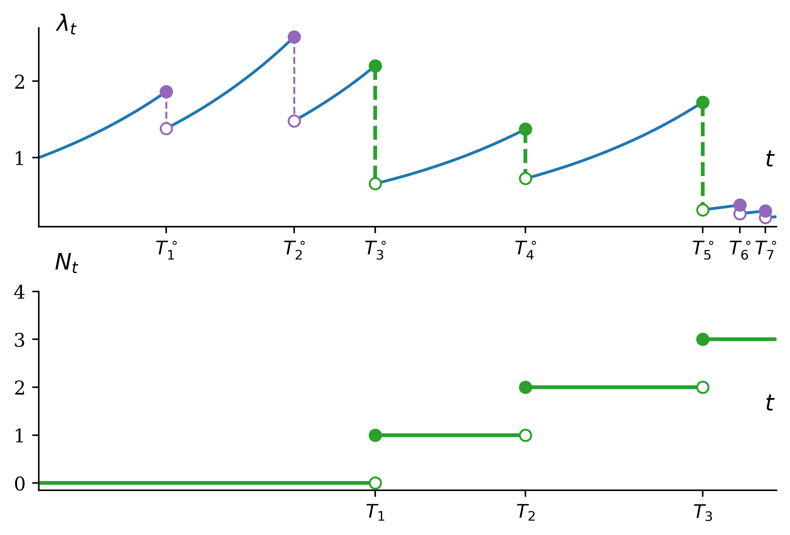
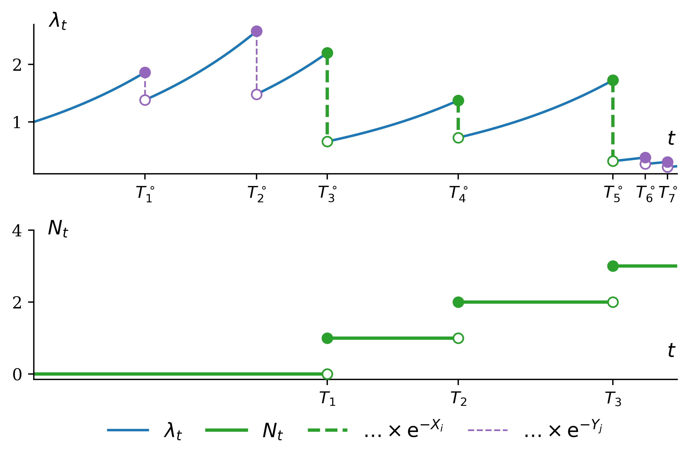
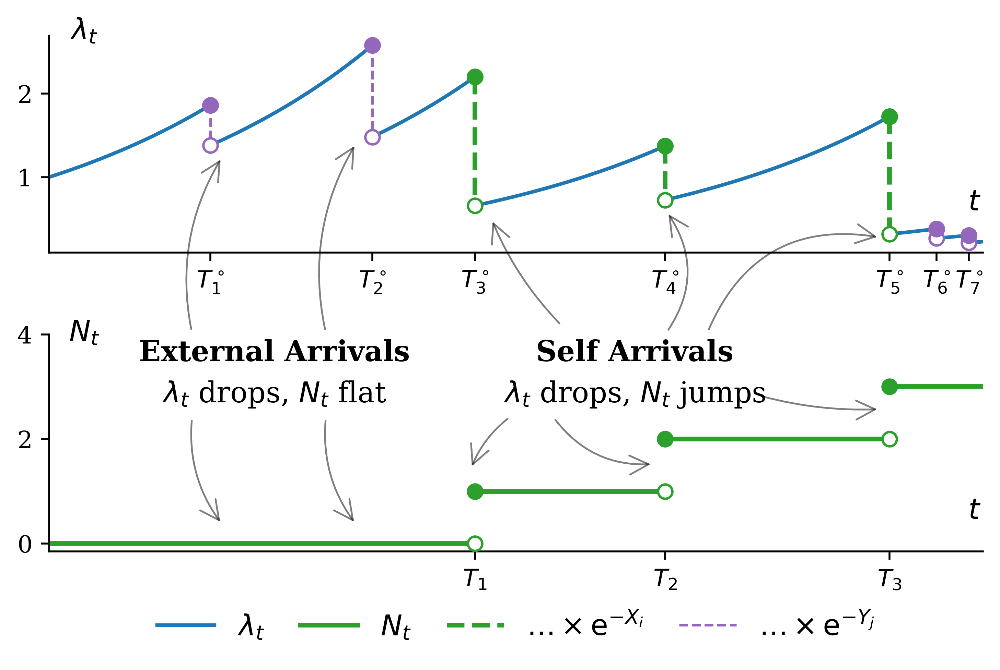
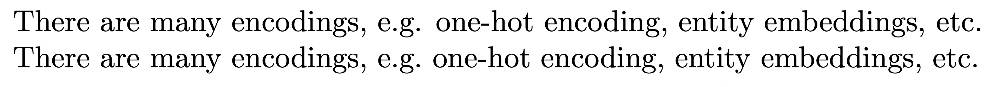
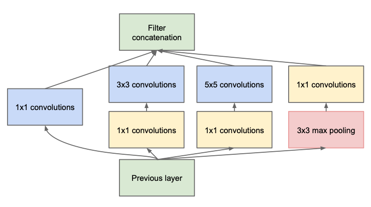

# This is the default colour scheme.colours = ["tab:blue", "tab:orange", "tab:green", "tab:red","tab:purple", "tab:brown", "tab:pink","tab:gray","tab:olive", "tab:cyan",]colours.remove("tab:orange")# Set the default color scheme so that this orange is skipped.import cyclerplt.rcParams["axes.prop_cycle"] = cycler.cycler(color=colours)
Tip
Don’t accept default colours, fonts, styles.
Point process example
A point process.
fig.text(0.095, 0.95, "$\\lambda_t$", **targs)
Point process example
A point process.
Point process example

A point process.
Point process example

A point process.
Point process example
Figure 1: An example realization of an extrinsic stress-release process, with \(\lambda_0 = 1\), \(\beta = 1.5\), \(\rho = 2\), and \(X_i \sim \mathsf{Exp}(1)\) and \(Y_j \sim \mathsf{Exp}(2)\). Note that \(N\) is càdlàg while \(\lambda\) is càglàd.
Point process example

Figure 1: An example realization of an extrinsic stress-release process, with \(\lambda_0 = 1\), \(\beta = 1.5\), \(\rho = 2\), and \(X_i \sim \mathsf{Exp}(1)\) and \(Y_j \sim \mathsf{Exp}(2)\). Note that \(N\) is càdlàg while \(\lambda\) is càglàd.
Make sure to match left & right apostrophes/quotes.
Some text in 'apostrophes' and in "quotation marks." Some text in `apostrophes' and in ``quotation marks.''
Text in \(\LaTeX\) II

Escape spaces after period which aren’t the end of sentence.
There are many encodings, e.g. one-hot encoding, entity embeddings, etc.There are many encodings, e.g.\ one-hot encoding, entity embeddings, etc.
Text in \(\LaTeX\) III
Use hyphens, en-dashes & em-dashes correctly.
It is a five-step procedure to fit the Lee-Carter model - depending on how you count - so \dotsIt is a five-step procedure to fit the Lee--Carter model --- depending on how you count --- so \dots
Use lots of fonts
Use a serif/teletype font for the columns in a dataset.
Looking at the \emph{NumAccidents} column\dotsLooking at the \texttt{NumAccidents} column\dots
Using kpfonts package
Default computer modern font.
After \usepackage{kpfonts}.
For each $x$ in the set $\mathcal{X}$, where $X \sim\mathsf{Poisson}(\mu)$ we calculate \[ \mathbb{P}(X \le x) = \mathscr{L}^{-1}\{ f_X \}(x) / x . \]
RNNs & CNNs For Time Series
The temperature in Jena, Germany
Temperature recorded every 10 minutes over 2009-2016 (8 years), which gives 420,551 data points.
All temperature data, yearly periodicity is observed.
10-day data shows some daily periodicity.
A temperature-forecasting example
Given a few months of data, predict the average temperature for the next month. This is an easy problem due to the reliable year-scale periodicity of the data.
Given hourly temperature data of the previous 5 days, predict the temperature in 24 hours. This is a harder problem because on a daily scale, data is more chaotic.
The baseline model
Build a model for 24-hour temperature forecast: Use a baseline model to evaluate the performance of the models that we build.
For our forecast model, the baseline model is to set the temperature 24 hours from now to be equal to the temperature right now. The validation error (mean absolute error) of this model is then 2.44 degrees Celsius, and the test error is 2.62 degrees.
A 24-hour forecast
Neither the densely connected network or the 1D convnet work well. Their validation errors are higher than the baseline model.
Using a densely connected network.
Using a 1D convolutional network.
Why the dense model doesn’t work
For the 2-layer densely connected neural network, even though a good solution technically exists where the neural network finds the baseline solution and improves on it, finding such solution in the hypothesis space of all possible 2-layer neural network with the configuration we defined is sometimes like finding a needle in the haystack. Good feature engineering and relevant network architecture is important in that case: you need to tell the model precisely what it should be looking for.
Why the CNN doesn’t work
Order of data in the sequence (such as a time series) matters a lot. For temperature forecast, recent data is more informative for predicting the next day’s temperature.
Convnet is unable to preserve order. In the pooling layer such as max pooling, the max value from a grid is retrieved while discarding information about the exact location of the max value in the grid. By losing positional information, the network fails to capture information about the spatial or temporal relation between the inputs.
Going forward & backwards in time
Using a dropout-regularised LSTM.
Using an LSTM on reversed sequences.
Why the backwards direction fails
The reversed-order LSTM strongly underperforms even the common-sense baseline, indicating that in this case, chronological processing is important to the success of the approach. This makes perfect sense: the underlying LSTM layer will typically be better at remembering the recent past than the distant past, and naturally the more recent weather data points are more predictive than older data points for the problem (that’s what makes the common-sense baseline fairly strong). Thus the chronological version of the layer is bound to outperform the reversed-order version.
Bidirectional RNN
Illustration of a bidirectional RNN.
Wrap a normal RNN layer inside the Bidirectional layer to get Keras to go forward & backwards in time.
… these models use a technique called transfer learning. There’s a pretrained neural network, and when you create your own classes, you can sort of picture that your classes are becoming the last layer or step of the neural net. Specifically, both the image and pose models are learning off of pretrained mobilenet models …
MNIST images are 28×28 pixels, and with zero-padding (for a 5×5 kernel) that becomes 32×32.
AlexNet (2012)
Layer
Type
Channels
Size
Kernel
Stride
Padding
Activation
In
Input
3
227×227
–
–
–
–
C1
Convolution
96
55×55
11×11
4
valid
ReLU
S2
Max pool
96
27×27
3×3
2
valid
–
C3
Convolution
256
27×27
5×5
1
same
ReLU
S4
Max pool
256
13×13
3×3
2
valid
–
C5
Convolution
384
13×13
3×3
1
same
ReLU
C6
Convolution
384
13×13
3×3
1
same
ReLU
C7
Convolution
256
13×13
3×3
1
same
ReLU
S8
Max pool
256
6×6
3×3
2
valid
–
F9
Fully conn.
–
4,096
–
–
–
ReLU
F10
Fully conn.
–
4,096
–
–
–
ReLU
Out
Fully conn.
–
1,000
–
–
–
Softmax
Data Augmentation
Examples of data augmentation.
Inception module (2014)
Used in ILSVRC 2014 winning solution (top-5 error < 7%).

VGGNet was the runner-up.
GoogLeNet / Inception_v1 (2014)
Schematic of the GoogLeNet architecture.
Depth is important for image tasks
Deeper models aren’t just better because they have more parameters. Model depth given in the legend. Accuracy is on the Street View House Numbers dataset.
Residual connection
Illustration of a residual connection.
ResNet (2015)
ResNet won the ILSVRC 2015 challenge (top-5 error 3.6%), developed by Kaiming He et al.
Diagram of the ResNet architecture.
Pretrained model
from tensorflow.keras.applications import mobilenetfrom PIL import Imagemodel = mobilenet.MobileNet(weights="imagenet")imageFilenames = ["patrick-0.jpg", "umbrella-0.jpg", "hand-15.jpg"]images = [np.asarray(Image.open(name)) for name in imageFilenames]images_resized = tf.image.resize(images, [224, 224])inputs = mobilenet.preprocess_input(images_resized)Y_proba = model.predict(inputs, verbose=0)top_K = mobilenet.decode_predictions(Y_proba, top=3)for image_index inrange(len(images)):print(f"Image #{image_index}:")for class_id, name, y_proba in top_K[image_index]:print(f" {class_id} - {name}{int(y_proba*100)}%")print()
# Pull in the base model we are transferring from.base_model = keras.applications.Xception( weights='imagenet', # Load weights pre-trained on ImageNet. input_shape=(150, 150, 3), include_top=False) # Discard the ImageNet classifier at the top.# Tell it not to update its weights.base_model.trainable =False# Make our new model on top of the base model.inputs = keras.Input(shape=(150, 150, 3))x = base_model(inputs, training=False)x = keras.layers.GlobalAveragePooling2D()(x)outputs = keras.layers.Dense(1)(x)model = keras.Model(inputs, outputs)# Compile and fit on our data.model.compile(optimizer=keras.optimizers.Adam(), loss=keras.losses.BinaryCrossentropy(from_logits=True), metrics=[keras.metrics.BinaryAccuracy()])model.fit(new_dataset, epochs=20, callbacks=..., validation_data=...)
Fine-tuning
# Unfreeze the base modelbase_model.trainable =True# It's important to recompile your model after you make any changes# to the `trainable` attribute of any inner layer, so that your changes# are take into accountmodel.compile( optimizer=keras.optimizers.Adam(1e-5), # Very low learning rate loss=keras.losses.BinaryCrossentropy(from_logits=True), metrics=[keras.metrics.BinaryAccuracy()])# Train end-to-end. Be careful to stop before you overfit!model.fit(new_dataset, epochs=10, callbacks=..., validation_data=...)
Danger
Keep the learning rate low, otherwise you may accidentally throw away the useful information in the base model.
What do the CNN layers learn?
Natural Language Processing
What is NLP?
A field of research at the intersection of computer science, linguistics, and artificial intelligence that takes the naturally spoken or written language of humans and processes it with machines to automate or help in certain tasks
1) Classifying documents: Using the language within a body of text to classify it into a particular category, e.g.:
Grouping emails into high and low urgency
Movie reviews into positive and negative sentiment (i.e. sentiment analysis)
Company news into bullish (positive) and bearish (negative) statements
2) Machine translation: Assisting language translators with machine-generated suggestions from a source language (e.g. English) to a target language
Applications of NLP in Industry
3) Search engine functions, including:
Autocomplete
Predicting what information or website user is seeking
4) Speech recognition: Interpreting voice commands to provide information or take action. Used in virtual assistants such as Alexa, Siri, and Cortana
Deep learning & NLP?
Simple NLP applications such as spell checkers and synonym suggesters do not require deep learning and can be solved with deterministic, rules-based code with a dictionary/thesaurus.
More complex NLP applications such as classifying documents, search engine word prediction, and chatbots are complex enough to be solved using deep learning methods.
NLP in 1966-1973 #1
A typical story occurred in early machine translation efforts, which were generously funded by the U.S. National Research Council in an attempt to speed up the translation of Russian scientific papers in the wake of the Sputnik launch in 1957. It was thought initially that simple syntactic transformations, based on the grammars of Russian and English, and word replacement from an electronic dictionary, would suffice to preserve the exact meanings of sentences.
NLP in 1966-1973 #2
The fact is that accurate translation requires background knowledge in order to resolve ambiguity and establish the content of the sentence. The famous retranslation of “the spirit is willing but the flesh is weak” as “the vodka is good but the meat is rotten” illustrates the difficulties encountered. In 1966, a report by an advisory committee found that “there has been no machine translation of general scientific text, and none is in immediate prospect.” All U.S. government funding for academic translation projects was canceled.
from pathlib import Pathifnot Path("NHTSA_NMVCCS_extract.parquet.gzip").exists():print("Downloading dataset")!wget https://github.com/JSchelldorfer/ActuarialDataScience/raw/master/12%20-%20NLP%20Using%20Transformers/NHTSA_NMVCCS_extract.parquet.gzipdf = pd.read_parquet("NHTSA_NMVCCS_extract.parquet.gzip")print(f"shape of DataFrame: {df.shape}")
shape of DataFrame: (6949, 16)
Features
level_0, index, SCASEID: all useless row numbers
SUMMARY_EN and SUMMARY_GE: summaries of the accident
NUMTOTV: total number of vehicles involved in the accident
WEATHER1 to WEATHER8:
WEATHER1: cloudy
WEATHER2: snow
WEATHER3: fog, smog, smoke
WEATHER4: rain
WEATHER5: sleet, hail (freezing drizzle or rain)
WEATHER6: blowing snow
WEATHER7: severe crosswinds
WEATHER8: other
INJSEVA and INJSEVB: injury severity & (binary) presence of bodily injury
Crash summaries
df["SUMMARY_EN"]
0 V1, a 2000 Pontiac Montana minivan, made a lef...
1 The crash occurred in the eastbound lane of a ...
2 This crash occurred just after the noon time h...
...
6946 The crash occurred in the eastbound lanes of a...
6947 This single-vehicle crash occurred in a rural ...
6948 This two vehicle daytime collision occurred mi...
Name: SUMMARY_EN, Length: 6949, dtype: object
"The crash occurred in the eastbound lane of a two-lane, two-way asphalt roadway on level grade. The conditions were daylight and wet with cloudy skies in the early afternoon on a weekday.\t\r \r V1, a 1995 Chevrolet Lumina was traveling eastbound. V2, a 2004 Chevrolet Trailblazer was also traveling eastbound on the same roadway. V2, was attempting to make a left-hand turn into a private drive on the North side of the roadway. While turning V1 attempted to pass V2 on the left-hand side contacting it's front to the left side of V2. Both vehicles came to final rest on the roadway at impact.\r \r The driver of V1 fled the scene and was not identified, so no further information could be obtained from him. The Driver of V2 stated that the driver was a male and had hit his head and was bleeding. She did not pursue the driver because she thought she saw a gun. The officer said that the car had been reported stolen.\r \r The Critical Precrash Event for the driver of V1 was this vehicle traveling over left lane line on the left side of travel. The Critical Reason for the Critical Event was coded as unknown reason for the critical event because the driver was not available. \r \r The driver of V2 was a 41-year old female who had reported that she had stopped prior to turning to make sure she was at the right house. She was going to show a house for a client. She had no health related problems. She had taken amoxicillin. She does not wear corrective lenses and felt rested. She was not injured in the crash.\r \r The Critical Precrash Event for the driver of V2 was other vehicle encroachment from adjacent lane over left lane line. The Critical Reason for the Critical Event was not coded for this vehicle and the driver of V2 was not thought to have contributed to the crash."
2532 This crash occurred in the early afternoon of ...
6209 This two-vehicle crash occurred in a four-legg...
2561 The crash occurred in the eastbound direction ...
Name: SUMMARY_EN, dtype: object
2532 This crash occurred in the early afternoon
6209 This two-vehicle crash occurred in a four-legged
2561 The crash occurred in the eastbound direction
Name: SUMMARY_EN, dtype: object
import spacynlp = spacy.load("en_core_web_sm")doc = nlp("Apple is looking at buying U.K. startup for $1 billion")for token in doc:print(token.text, token.pos_, token.dep_)
Apple PROPN nsubj
is AUX aux
looking VERB ROOT
at ADP prep
buying VERB pcomp
U.K. PROPN compound
startup NOUN dobj
for ADP prep
$ SYM quantmod
1 NUM compound
billion NUM pobj


{kind=link}
{kind=link}
{kind=link}